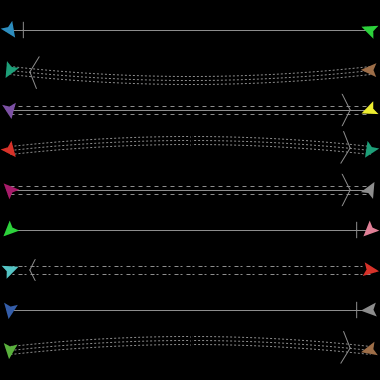

海龟和链图形编辑器用来创建和保存海龟和链图案。
NetLogo使用完全可缩放、可旋转的矢量图形，可以使用基本几何形状组合成图案，图案可以用任何大小和角度显示在屏幕上。
在Tools菜单中选择Turtle Shapes Editor 或Link Shapes Editor 开始制作图形。在打开的新窗口里，当前模型中的所有图形都会列出来，第一项是默认图形default。使用图形编辑器可以创建新图形、编辑图形、从其他模型中导入图形。也可以从由已有图形组成的图形库里导入图形。
新模型开始时只包含一小部分常用的核心图形。使用 Import from library... 按钮获得更多的海龟图形，出现对话框，选择一个或多个图形导入模型之中。选择所需图形，按下 Import按钮。
类似的，也可使用Import from model...从其他模型导入图形。
默认图形
下面是默认情况下每个新模型包含的海龟图形：
第一行: default, airplane, arrow, box, bug, butterfly, car
第二行: circle, circle 2, cow, cylinder, dot, face happy, face
neutral
第三行: face sad, fish, flag, flower, house, leaf, line
第四行: line half, pentagon, person, plant, sheep, square, square
2
第五行:star, target, tree, triangle, triangle 2, truck, turtle
第六行: wheel, x
图形库
下面是图形库中的所有图形 (包括所有的默认图形):

默认情况下只有一个链图形，即default"。这是一个简单的直线加一个简单的箭头（如果是有向链的话）
按下 New 按钮创建新图形，或者选择已有图形后按下Edit。
在编辑窗口的左上角是一组画图工具。箭头是选择工具，用来选择已经画出的绘图元素。
使用其他七个画图工具绘制新元素。
使用多边形（polygon）工具时，单击鼠标增加新线段，画完所有线段后，双击。
画出一个新元素后，它就是当前选择，因此可以移动、删除、修改。
绘制图形时，在编辑窗口底部有5个预览区，显示5个小尺寸的图形。预览区显示当出现在模型中时，图形的样子，包括旋转后的样子。每个预览区下面的数字是预览的像素数。例如预览区下的20，表示在瓦片尺寸为20个像素时，海龟（尺寸1）的显示情况。
如果图形总是面对一个方向，不随海龟方向而改变，可以关闭可旋转特性。
新元素在旧元素的上层。选择一个元素后，使用Bring to front 和Send to back 按钮改变他们的层序。
任何时候可以使用 Undo按钮，撤销刚才所做的操作。
与 Color that changes (从下拉式菜单选择 – 默认是灰色)指定的颜色一致的元素会根据每个海龟的 color r变量而变化，而其他颜色的元素不变。例如，你可以创建车辆，他们的车灯总是黄色、车轮总是黑色，而车体有不同的颜色。
"Rotate Left"和"Rotate Right" 按钮将元素旋转90度。 "Flip Horizontal" 和 "Flip Vertical" 按钮根据轴线翻转元素。
这四个按钮一般用来旋转或翻转整个图形。但如果选定了一个元素时，只对该元素进行。
这些按钮与 "Duplicate" 一起，为构造对称图形提供了便利。例如，制作蝴蝶图形时，先用polygon工具绘制左翼，然后用 "Duplicate"复制，在对复制品使用 "Flip Horizontal" 得到右翼。
也许有人希望绘制复杂的、有趣的图形，但是要记住在多数模型里瓦片很小，看不到很多图形细节。简单的、粗体的、图标化的图形一般最好。
图形绘制完成后，指定名称，按下编辑窗口底部的Done 按钮。该图形及名字就与 "default"图形一起，出现在图形列表中。
管理链图形与管理海龟图形很相似。使用 New按钮创建新图形或编辑已有图形，编辑完成后按下 Done按钮保存。
每个链图形有几个不同的属性，这些属性可以改变：
下面是几条具有不同属性的链图形:

在模型代码或命令中心可以使用模型中的任何图形（尽管海龟只能使用海龟图形，链只能使用链图形）。例如，创建50个使用 "rabbit".图形的海龟，前提是模型里有名为 rabbit 的海龟图形，在命令中心为observer指定命令：
observer> crt 50
然后为海龟指定命令，让他们散开、改变图形:
turtles> fd random 15 turtles> set shape "rabbit"
瞧！兔子！注意图形名使用双引号，因为图形名是字符串。
类似的可以设置链的shape变量。假设有一个名为"road"的链图形：
observer> crt 5 [ create-links-with other turtles ] turtles> fd 5 links> set shape "road"
命令set-default-shape 也可用来为海龟或链分配图形。